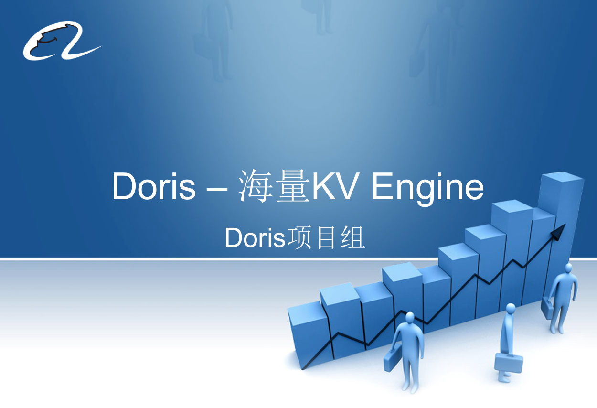
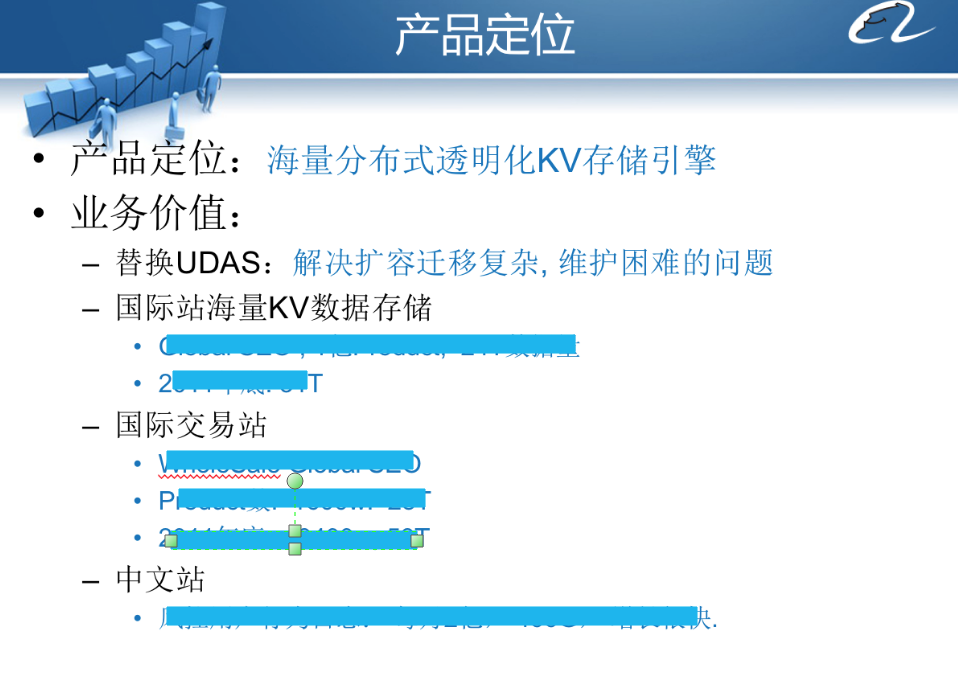
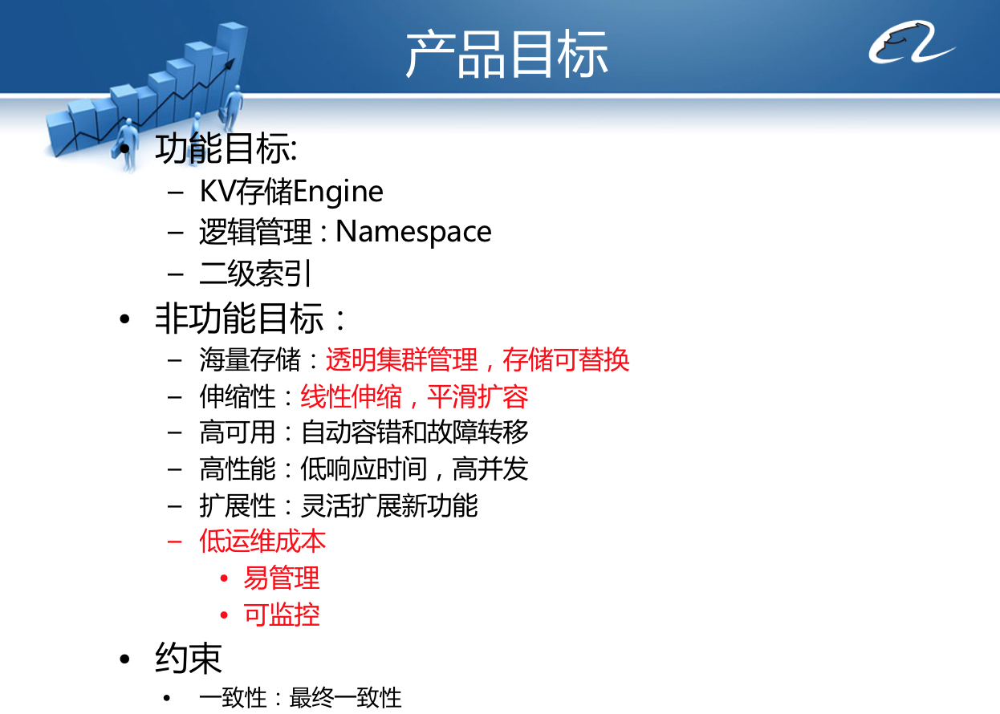
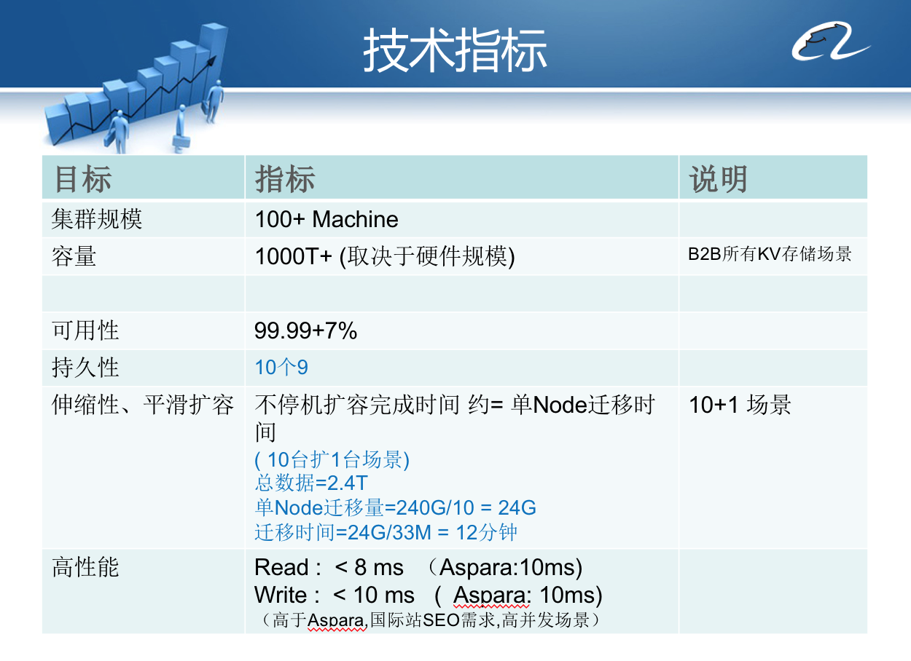

- 00 开篇词 为什么说每个软件工程师都应该懂大数据技术？.md
- 01 大数据技术发展史：大数据的前世今生.md
- 02 大数据应用发展史：从搜索引擎到人工智能.md
- 03 大数据应用领域：数据驱动一切.md
- 04 移动计算比移动数据更划算.md
- 05 从RAID看垂直伸缩到水平伸缩的演化.md
- 06 新技术层出不穷，HDFS依然是存储的王者.md
- 07 为什么说MapReduce既是编程模型又是计算框架？.md
- 08 MapReduce如何让数据完成一次旅行？.md
- 09 为什么我们管Yarn叫作资源调度框架？.md
- 10 模块答疑：我们能从Hadoop学到什么？.md
- 11 Hive是如何让MapReduce实现SQL操作的？.md
- 12 我们并没有觉得MapReduce速度慢，直到Spark出现.md
- 13 同样的本质，为何Spark可以更高效？.md
- 14 BigTable的开源实现：HBase.md
- 15 流式计算的代表：Storm、Flink、Spark Streaming.md
- 16 ZooKeeper是如何保证数据一致性的？.md
- 17 模块答疑：这么多技术，到底都能用在什么场景里？.md
- 18 如何自己开发一个大数据SQL引擎？.md
- 19 Spark的性能优化案例分析（上）.md
- 20 Spark的性能优化案例分析（下）.md
- 21 从阿里内部产品看海量数据处理系统的设计（上）：Doris的立项.md
- 22 从阿里内部产品看海量数据处理系统的设计（下）：架构与创新.md
- 23 大数据基准测试可以带来什么好处？.md
- 24 从大数据性能测试工具Dew看如何快速开发大数据系统.md
- 25 模块答疑：我能从大厂的大数据开发实践中学到什么？.md
- 26 互联网产品 + 大数据产品 = 大数据平台.md
- 27 大数据从哪里来？.md
- 28 知名大厂如何搭建大数据平台？.md
- 29 盘点可供中小企业参考的商业大数据平台.md
- 30 当大数据遇上物联网.md
- 31 模块答疑：为什么大数据平台至关重要？.md
- 32 互联网运营数据指标与可视化监控.md
- 33 一个电商网站订单下降的数据分析案例.md
- 34 A_B测试与灰度发布必知必会.md
- 35 如何利用大数据成为“增长黑客”？.md
- 36 模块答疑：为什么说数据驱动运营？.md
- 37 如何对数据进行分类和预测？.md
- 38 如何发掘数据之间的关系？.md
- 39 如何预测用户的喜好？.md
- 40 机器学习的数学原理是什么？.md
- 41 从感知机到神经网络算法.md
- 42 模块答疑：软件工程师如何进入人工智能领域？.md
- 所有的不确定都是机会——智慧写给你的新年寄语.md
- 第2季回归丨大数据之后，让我们回归后端.md
- 结束语 未来的你，有无限可能.md
21 从阿里内部产品看海量数据处理系统的设计（上）：Doris的立项
从今天开始，我会分两期内容来讨论阿里巴巴的一个海量数据处理系统的设计，这个系统的名字叫Doris，它是阿里巴巴的一个内部产品。前面专栏曾经提到过，2010年前后是各种NoSQL系统爆发的一个时期，各种开源NoSQL在这个时期发布出来，当时阿里巴巴也开发了自己的NoSQL系统Doris。
Doris的设计目标是支持海量的KV结构的数据存储，访问速度和可靠性要高于当时主流的NoSQL数据库，系统要易于维护和伸缩。和当时众多NoSQL系统相比，Doris在架构设计上颇具独特性，路由算法、失效转移、集群扩容也有自己的创新之处，并成功申请三项技术专利。
在我们开始讨论Doris项目前，我想先跟你聊聊大公司是如何看待内部技术产品这件事。事实上，阿里巴巴内部底层技术产品的研发决策思路也颇有值得借鉴之处，你可以吸收其中好的经验，并把它转化到你所开发的产品上。
我们知道一家互联网公司主要靠自己的互联网产品盈利，比如阿里巴巴主要靠淘宝、天猫、阿里巴巴B2B网站等产品赚钱，而公司的工程师主要也是开发这些产品，但是这些产品通常都需要处理海量的用户请求和大规模的数据存储，所以在系统底层通常用到很多基础技术产品，比如分布式缓存、分布式消息队列、分布式服务框架、分布式数据库等。这些基础技术产品可以选择开源技术产品，也可以选择自己研发。自己研发的优点是可以针对业务场景进行定制开发，同时培养提高自己工程师的技术实力；缺点是投入大、风险高。
通常公司到了一定规模，都会开始逐渐自主研发一些基础技术产品，既可以提升自己的产品研发能力，又可以提高自身在业界的地位，吸引更优秀的人才并提高竞争门槛，形成自己的竞争壁垒。
但是公司的资源毕竟是有限的，主要的资源又投入到业务产品开发去了，那剩下的资源到底应该投入到哪里呢？这需要形成公司内部一套竞争策略，以使优秀的项目能够得到资源。
另一方面，对工程师而言，业务产品的开发技术难度相对较低，如果要想更快提高自己的技术水平，去开发基础技术产品更能得到提升和锻炼，所以优秀的工程师更愿意去开发有难度有挑战的创新性基础技术产品，而不是去开发那些千篇一律的业务产品。
这样，在工程师和公司之间就形成了一种博弈：工程师想要开发基础技术产品，但是必须要得到公司管理层的支持；管理层资源有限，只愿意支持开发那些对业务有价值、技术有创新、风险比较低的基础技术产品。
所以事情就变成工程师需要说服公司管理层，想要做的就是对业务有价值、技术有创新、风险比较低的基础技术产品；而管理层则要从这些竞争者中选出最优秀的项目。
通过这种博弈，公司的资源会凝聚到最有价值的技术产品上，优秀的工程师也会被吸引到这些项目上，最后实现了公司价值和员工价值的统一和双赢。
下面我们进入正题，我会拿出当时Doris开发立项时说服管理层用的PPT，向你解读个中技巧以及Doris的创新设计。 需要提醒你的是，你在学习这两期专栏时可以试着想象一个场景，假设是在Doris项目的立项启动会，今天你是老板，看看你最关注一个项目的哪些技术指标；又或者你是Doris项目的工程师，可以想想哪些指标是老板关注的，并且从技术上是可以实现的。这样把自己带入到一个角色中，对于你更好理解这个数据处理系统很有帮助。

-
PPT开篇就是当前现状，当时阿里巴巴没有统一的大数据NoSQL解决方案，有的产品是自己在业务代码中实现数据分区逻辑，从而实现海量KV数据的存储访问。这样做的主要问题有
开发困难。程序员在开发时要知道自己存储的数据在哪台服务器。
运维困难。增加服务器的时候，需要开发配合，故障的时候也很难排查问题。
现状一定是有问题的，需要我们去解决。有没有现成的解决方案？有，但是现成的方案也有问题，所以我们必须要自己开发一套系统才能解决问题。这样，后面想做的一切才能顺理成章。
当你想做一个新东西，它必须要能解决当前的问题，这是人类社会的基本运行规律。如果当前没有问题呢？你相信我，这个世界不可能没有问题的，重要的是你要能发现问题。就像你做的东西将来也一定会有问题，因为现在的产品在将来一定会落伍，但那已经不再是你的问题。
技术只是手段，技术不落在正确的问题上一点用也没有，而落在错误的问题上甚至会搬起石头砸了自己的脚。而什么是正确的问题，你需要自己去思考和发现。

前一页说完了当前存在的问题，引出了我们必须要自己开发一个海量数据处理系统，这一页就要说明这个产品的定位，也就是“海量分布式透明KV存储引擎”，这个引擎能够实现的业务价值就是能够支撑阿里巴巴未来各个主要产品的海量数据存储访问需求。
这两页是整个PPT的灵魂，管理层如果对第一页提出的问题不认可，又对第二页产品要实现的价值不以为然，那基本上这个项目也就凉凉了。
如果到这里没有问题，得到认可，那下一步就要趁热打铁，突出项目的创新和特点。

产品的功能目标和非功能目标要清晰、要有亮点，和业界主流产品比要有竞争优势（用红色字体标出），要更贴合公司的业务场景。Doris的主要功能目标是提供KV存储，非功能目标包括在运维上要实现集群易于管理，具有自我监控和自动化运维功能，不需要专业运维人员维护；要支持集群线性伸缩，平滑扩容；具有自动容错和故障转移的高可用性；高并发情况下快速响应的高性能性；支持未来功能持续升级的可扩展性。

技术指标也要亮眼，至少不能明显低于当前主流同类产品的指标。当时Doris根据阿里巴巴的内部使用需求场景，支持所有的B2B业务的KV存储，因此设计目标是未来部署一个100～10000台服务器的集群规模，并不支持无限伸缩。如果前面说过别的产品的缺点，这里也要对应说明自己强在哪里。
设计指标的设定，既不能低，如果比目前主流同类产品的指标还要差，自己再开发这样的产品就没有意义；也不能太高，如果设定太高，过度承诺，让老板、用户对你未来交付的产品抱有太高的期望，将来稍有不慎，无法达到期望，不但对产品的发展造成不良影响，甚至大家对你的人品都会产生怀疑。做好对别人的期望管理，让大家对你既充满期待，又不至于不切实际，不但对你的职业发展大有帮助，应用到生活中也会获益良多。
到这里，问题也说了、方向也有了、设计指标也定了，究竟能不能开发出满足设计目标的产品，就看后面的PPT把核心架构和关键设计讲清楚，要证明自己有把握、有能力做到。
到底如何证明自己能做到，且听下回分解。
思考题
在你的工作环境中，哪些工作是更有技术挑战和难度的工作？现在是否有人在做？如果你想做，该如何说服上司支持你？
欢迎你点击“请朋友读”，把今天的文章分享给好友。也欢迎你写下自己的思考或疑问，与我和其他同学一起讨论。
© 2019 - 2023 Liangliang Lee. Powered by gin and hexo-theme-book.